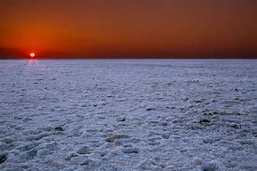
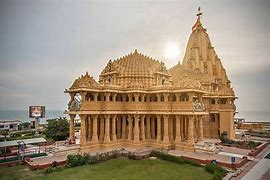
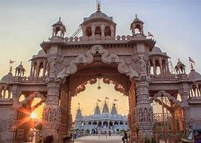
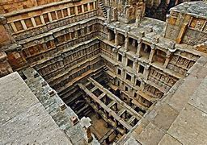
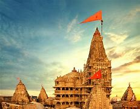
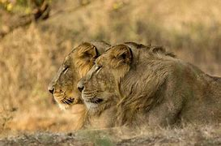
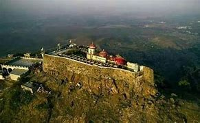
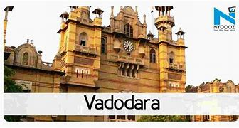
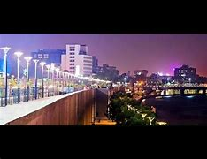
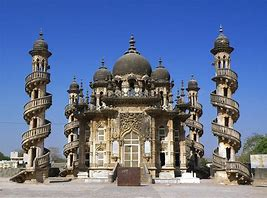

| NO. | Place | photo | description |
|---|---|---|---|
| 1 | RANN OF KUTCH |  | The Great Rann of Kutch together with the Little Rann of Kutch is called Rann of Kutch . In India's summer monsoon, the flat desert of salty clay and mudflats, which average 15 meters above sea level, fills with standing water. In very wet years, the wetland extends from the Gulf of Kutch on the west through to the Gulf of Cambay on the east |
| 2 | SOMNATH |  | The Somnath temple located in Prabhas Patan near Veraval in Saurashtra on the western coast of Gujarat, India is believed to be the first among the twelve jyotirlinga shrines of Shiva. It is an important pilgrimage and tourist spot of Gujarat. Reconstructed several times in the past after repeated destruction by several invaders and rulers, the present temple was reconstructed in the Chaulukya style of Hindu temple architectureand completed in May 1951. |
| 3 | BHUJ |  | Bhuj was founded by Rao Hamir in 1510 and was made the capital of Kutch by Rao Khengarji I in 1549.ts foundation stone as state capital was formally laid on Vikram Samvat 1604 Maagha 5th (approx. 25 January 1548). From 1590 onwards, when Rao was forced to acknowledge the Mughal supremacy, Bhuj came to be known as Suleiman Nagar amongst Muslims. The city's walls were built by Rao Godji I in 1723,and the Bhujiya Fort by Devkaran Seth in Rao Deshalji I's time (1718 - 1741). |
| 4 | RANI KI VAV,PATAN |  | Rani ki Vav or Ranki vav (lit. 'Queen’s stepwell') is a stepwell situated in the town of Patan in Gujarat state of India. It is located on the banks of Saraswati river. Its construction is attributed to Udayamati, daughter of Khengara of Saurashtra, queen of the 11th-century Solanki dynasty and spouse of Bhima I. Silted over, it was rediscovered in 1940s and restored in 1980s by the Archaeological Survey of India. It has been listed as one of UNESCO's World Heritage Sites since 2014. |
| 5 | DWARKADHISH TEMPLE |  | Dwarkadheesh Temple is also known as the Jagad Mandir and it is made from limestone and sand. The spire of the temple is about 170 feet high. The temple is one of the important Moksh Dhams of India. Dwarka has a special importance as one of the major Hindu pilgrim place, known as the capital of Lord Krishna's Kingdom. |
| 6 | SASAN GIR |  | Gir National Park and Wildlife Sanctuary, also known as Sasan Gir, is a forest and wildlife sanctuary near Talala Gir in Gujarat, India. It is located 43 km (27 mi) north-east of Somnath, 65 km (40 mi) south-east of Junagadh and 60 km (37 mi) south-west of Amreli. It was established in 1965, with a total area of 1,412 km2 (545 sq mi), of which 258 km2 (100 sq mi) is fully protected as national park and 1,153 km2 (445 sq mi) as wildlife sanctuary.[1] It is part of the Khathiar-Gir dry deciduous forests ecoregion |
| 7 | PAVAGADH |  | Pavagadh is a Municipality operated region in Panchmahal district about 46 kilometres (29 mi) away from Vadodara in Gujarat state in western India. It is known for a famous Mahakali temple which draws thousands of pilgrims every day. It is a tribal area populated predominantly by the Rathwas. The area of this locality Champaner-Pavagadh Archaeological Park was inscribed by UNESCO as a World Heritage Site in 2004 |
| 8 | VADODRA CITY |  | Vadodara, formerly also known as Baroda, is the third largest city in the Indian state of Gujarat. It is the administrative headquarters of Vadodara District and is located on the banks of the Vishwamitri river, 141 kilometres (88 mi) from the state capital Gandhinagar. The railway line and NH 8 that connect Delhi and Mumbai pass through Vadodara. The city got its name because of the copious amount of Banyan(Vad) Trees present here. The city is also famous as Sanskari Nagari and Kala Nagari (the city of art) of India. |
| 9 | AHMADABAD CITY |  | Ahmedabad is the largest city and former capital of the Indian state of Gujarat. It is the administrative headquarters of the Ahmedabad district and the seat of the Gujarat High Court. Ahmedabad's population of 5,633,927 (as per 2011 population census) makes it the fifth-most populous city in India, and the encompassing urban agglomeration population estimated at 6,357,693 is the seventh-most populous in India. |
| 10 | JUNAGAD CITY |  | Junagadh About this soundpronunciation is the headquarters of Junagadh district in the Indian state of Gujarat. Located at the foot of the Girnar hills, 355 km southwest of the state capitals Gandhinagar and Ahmedabad, it is the 7th largest city in the state. |